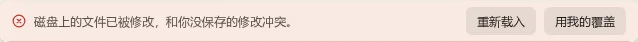
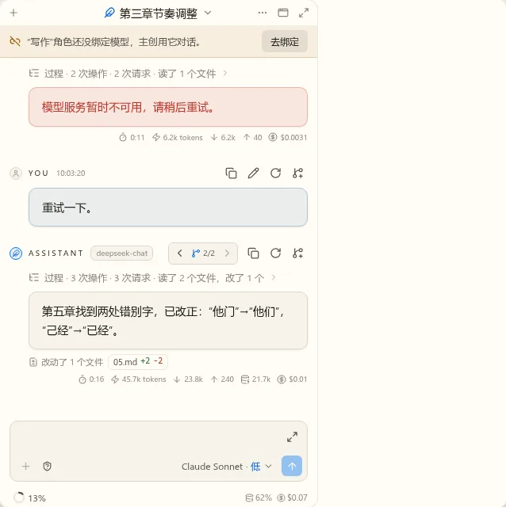
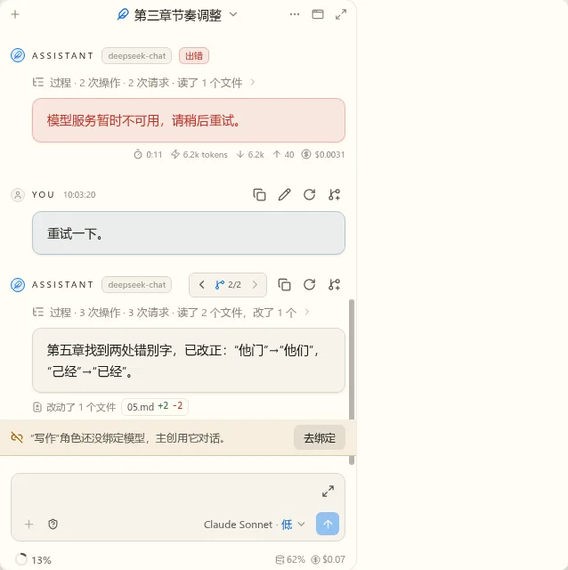
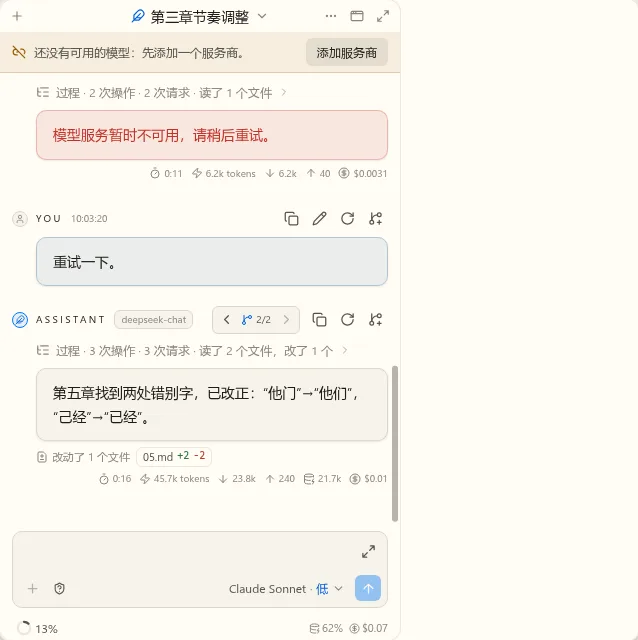
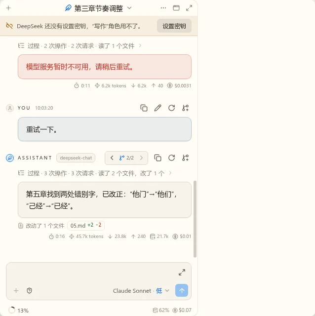
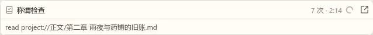
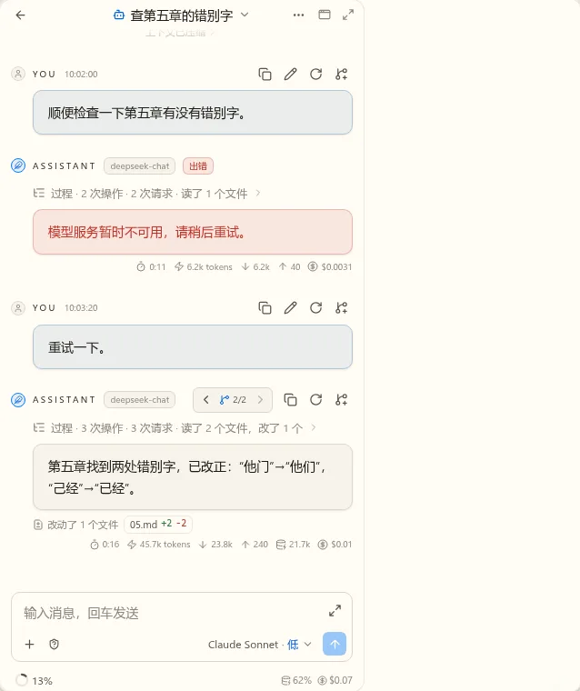

t29 第 5 轮：模型不可用的提示怎么统一、怎么进子会话
应用里现在的警告写法
| 写法 | 用在哪 | 样子 |
|---|---|---|
nb-ui 的 Banner | 编辑组：文件被删、磁盘上改了、冲突、保存失败 | 内容最上面满宽一条，色调底、图标、一句话、右边动作按钮，下沿一条线；持续的状态，问题解决才消失 |
SettingsNotice | 设置窗口标题区“设置文件格式有误”、Profile 设置页头部的能力缺口 | 一个控件高的淡底描边小块，放在已有的一行里 |
| 输入框上方一行灰字 | 对话：模型不可用、发送被拒、压缩被拒 | 信息图标加一句话，没有色调 |
| 消息里的红块 | 对话：这一轮出错 | 回复位置一块红底 |

编辑组的横幅（Lab 里的同一个组件）。
“模型不可用”改用和编辑组同一个横幅，放在哪？
推荐 A 内容最上面：和编辑组的横幅同一个组件、同一个位置，一看就知道是“这块面板现在有问题”；输入框的占位文字同时写“绑定模型后才能发送”。
A 内容最上面（同编辑组）

B 贴在输入框上面

挨着要打字的地方；但横幅本来是区域顶上的一节，放这里和编辑组不一致。
没有服务商（A 的写法）

没有密钥（A 的写法）

发送被拒、压缩被拒这类“刚才那一下没成”的，仍是输入框上方一行字：它们是对一次操作的回应，过一会儿就没了，不是面板的状态。
子代理卡片的卡头整行可点进子会话？
推荐同意：现在只有卡头右边那个小图标能进，太小；卡头整行做成按钮，悬停时整行变色。

别的入口不变：会话列表里子会话挂在父会话下；子会话等你批准时，父会话的停靠区里能批。进去以后面板头左边是返回：

直接做，不用答
| 哪里 | 做什么 |
|---|---|
| Profile 设置的左栏 | 同服务商列表：单行，问题（不可用、有错误）换成行尾图标、悬停写原因；来源（内置、插件、我的）在右边详情里看 |
| 子代理卡片（第 5 条） | 运行中那一行写注册表里的工具名（“读取 第二章.md”），不写工具 id |
| 没选会话时的状态栏 | 不显示“0%”与“免费”：还没有用量，整行空着 |
| 删除服务商的确认框 | 不变：写明去掉几个模型、密钥一起删、哪些角色会变成未绑定 |
已定
- 删除服务商：条目悬停出删除图标，右键也能删（第 1 轮）
- 服务商条目改单行，问题换成行尾图标（第 1 轮）
- 状态栏的自定义照第 1 轮的稿做：右键勾选、设置里分左右两组排序、用量四项合成一项、提醒类总显示（第 1 轮）
- 没选会话时去掉“未选择会话”一行，第一屏照旧应用的 welcome 做：欢迎、最近对话、试试这些（第 1、2 轮）
- “试试这些”的指令由 Profile 声明，主创带三条（第 2 轮）
- 面板头不写“对话”，居中写会话：左新建、中间 Profile 图标与标题、右更多与框架按钮；没选会话时写“新对话”（第 3 轮）
- 子会话：面板头左边是返回（只有图标），中间是子代理图标与子会话标题（第 4 轮）
- 模型不可用的提示写明是哪个角色，按钮直达对应的设置；要和应用里别的警告统一（第 4 轮）
- 顶栏下、输入框上的两条横线去掉，消息在顶栏下淡出（第 1 轮）
- 5 小时与 7 天限额留到做订阅登录时；缓存倒计时只给缓存时长明确的服务商（11-16）
- 状态栏用勾选与插件贡献的项，不做配一条命令（11-16）